Floral do casamento
Proposta de três níveis de floral, amarrados aos três níveis de mobília: se um sobe, o outro sobe junto. Quantidades para 60 convidados, o limite dos pacotes.
Como está hoje
Medido no banco em 20/10. Dois problemas aparecem antes de qualquer proposta.
Nenhum pacote floral tem composição cadastrada
Os cinco pacotes de floral do CRM têm preço e nome, e nenhum item dentro. O que descreve o floral é um material publicado — o Essencial — que fala de quatro ambientes: cerimônia, mesa de doces, mesa dos noivos e mesas dos convidados, com 5 arranjos baixos para até 5 mesas, e avisa que mesa adicional é orçada à parte.
Resultado: o vendedor não tem lista para mostrar, e a Decoração não tem lista para montar.
| Pacote floral de hoje | Tabela | Vendas | Média praticada |
|---|---|---|---|
| Mini Wedding | R$ 8.000 | 6 | R$ 6.883 |
| Beauty Wedding- Permanente | R$ 12.000 | 3 | R$ 8.000 |
| Boho | R$ 15.000 | 6 | R$ 10.583 |
| Cristal | R$ 12.000 | 0 | — |
| Pacote Essencial - Decoração Floral Permanente | R$ 0 | 26 | R$ 5.591 |
| Pacote Cristal ( Itens + Floral ) | R$ 32.000 | 0 | — |
O floral empacotado quase não vende
Os pacotes florais somam 41 vendas, contra cerca de 1.180 dos pacotes de mobília. O que roda é o avulso: “Decoração Floral”, um item sem preço de tabela, saiu 75 vezes com média de R$ 4.488.
| Item floral avulso | Tabela | Vendas | Média praticada |
|---|---|---|---|
| Arranjos Baixos - Mesa Convidados | R$ 150 | 92 | R$ 1.135 |
| Decoração Floral | R$ 0 | 75 | R$ 4.488 |
| Arranjo Suspenso | R$ 1.300 | 72 | R$ 943 |
| Corrimão Floral | R$ 1.500 | 17 | R$ 1.207 |
| Arranjos Alto - Mesa Convidados | R$ 350 | 14 | R$ 2.292 |
| Arranjo Grande - Mesa de Doces | R$ 500 | 10 | R$ 681 |
| Arranjo Pequeno - Mesa de Doces | R$ 200 | 9 | R$ 457 |
| Painel Floral Instagramavel | R$ 1.500 | 6 | R$ 1.150 |
| Buquê da Noiva | R$ 1.200 | 3 | R$ 1.217 |
O que vem em cada nível
Na ordem do evento. Cada peça de mobília que pede flor ganha flor no mesmo nível: o nível 1 não tem arco, então não tem arco florido.
| O que vem | Floral 1 | Floral 2 | Floral 3 |
|---|---|---|---|
| A noiva | |||
| Buquê da noiva natural, flor da estação | ✓ | ✓ | ✓ |
| Buquê de jogar | — | ✓ | ✓ |
| Flor de lapela noivos, pais e padrinhos | — | ✓ | ✓ |
| Cerimônia | |||
| Arco | — não tem arco no nível 1 | florido por inteiro, em guirlanda | florido por inteiro, coberto |
| Arranjo no aparador do celebrante | 1 | 1 | 1 |
| Trilho | 8 buquezinhos nas cadeiras as da ponta de cada fileira | laterais preenchidas corredor florido dos dois lados | personalizado fechado na reunião de decoração |
| Mesa dos noivos | |||
| Arranjo da mesa | 1 baixo | 1 frontal | 1 frontal |
| Jardim suspenso sobre a mesa | — | — | florido |
| Detalhe no guardanapo dos noivos | — | ✓ | ✓ |
| Mesa de doces | |||
| Arranjo grande | 1 | 2 | 2 |
| Arranjo pequeno | — | 2 | 4 |
| Flor nos suportes de doces | — | — | ✓ |
| Mesas dos convidados | |||
| Arranjo por mesa 1 a cada 10 convidados | — | 6 baixos | 6, alto ou baixo |
| Salão | |||
| Estante de velas de LED | — | — | florida |
| Cenário de foto | — | — | painel floral ou Better Together |
O arco da cerimônia
O arco é florido por inteiro nos dois níveis. O que muda é a densidade, e são duas palavras só — vale usar essas, do orçamento à ordem de serviço:
GuirlandaFloral 2
A flor corre ao longo do arco inteiro, numa faixa estreita. A estrutura aparece entre as flores e o desenho do arco continua visível.
Leva menos flor e monta mais rápido. É o arco que a maioria dos casamentos usa.
CobertoFloral 3
A flor fecha a estrutura, com volume. O arco some embaixo da flor e o que se vê é um bloco florido.
É o arco de foto, e o que justifica o salto do nível 3 na cerimônia.
São palavras que a cliente entende sem explicação — guirlanda ela conhece do Natal, coberto é literal — e que a Decoração já usa para medir material. É a mesma régua de leve e cheio dos arranjos, aplicada ao arco.
A subida de nível
Do 1 para o 2, a flor sai dos pontos e toma o corredor: o nível 1 tem o arranjo do celebrante e os buquezinhos nas cadeiras da ponta, o 2 preenche as duas laterais do trilho e põe flor na frente de cada convidado. É a subida mais fácil de mostrar na reunião, porque muda a foto da entrada da noiva.
Do 2 para o 3, o arco passa de guirlanda a coberto, o trilho deixa de ter fórmula e vira personalizado — o casal desenha o corredor na reunião de decoração —, e a flor muda de categoria. Entram também o jardim suspenso, a estante florida e o cenário de foto.
A flor
O acervo real, fotografado pela equipe em 05/11: 48 flores de 19 espécies. A folhagem ainda é a da pasta do Drive de 22/10, até chegarem as fotos novas dela. A separação em premium, intermediária e base segue o preço no mercado de flor natural, que é como o cliente enxerga valor.
Como ler a separação
| Categoria | Quantas | Por que |
|---|---|---|
| Premium | 22 | cara no mercado de flor natural, por ser importada, sazonal ou de cultivo longo |
| Intermediária | 20 | preço médio, disponível o ano inteiro |
| Base | 6 | barata e de volume; é o que preenche o arranjo |
| Folhagem | 13 | não conta como espécie de flor: é a base de qualquer arranjo, em todos os níveis. Ainda são as fotos do Drive de 22/10 |
Atenção: o acervo é todo de flor permanente, que não tem sazonalidade nem custo de importação. A régua de preço natural serve para o cliente entender a diferença, não para descrever o custo do Indaiá — esse ainda falta.
Premium22 · cara no mercado de flor natural, por ser importada, sazonal ou de cultivo longo
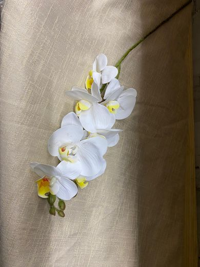
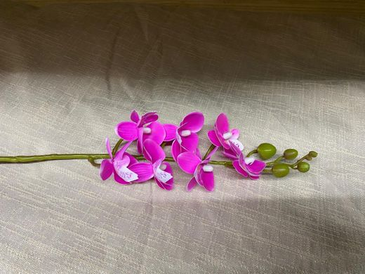
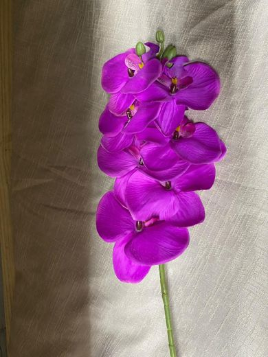
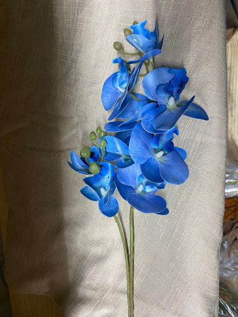
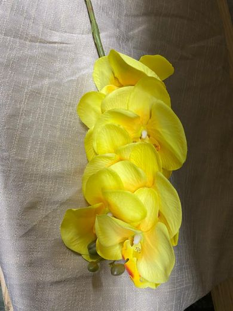
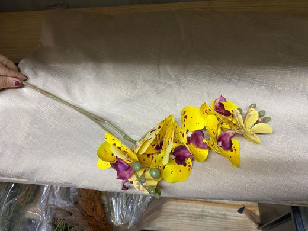
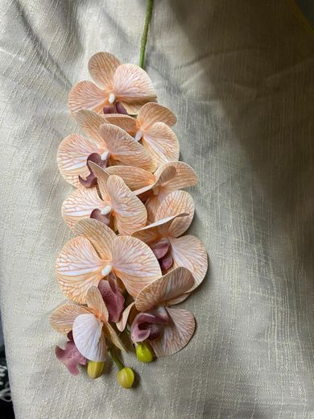
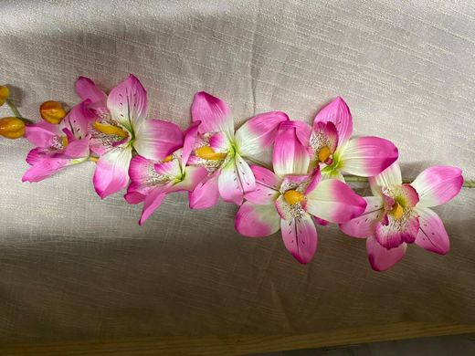
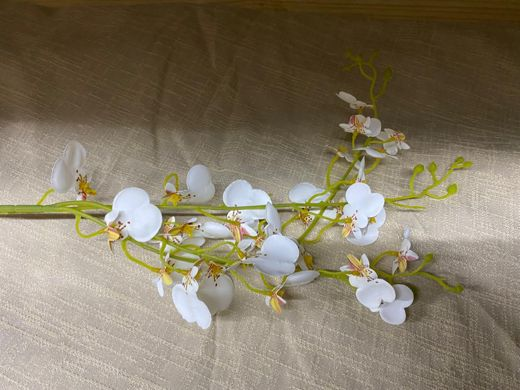
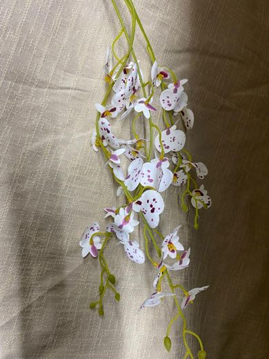
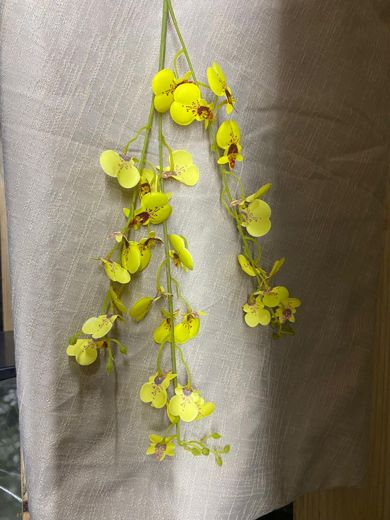
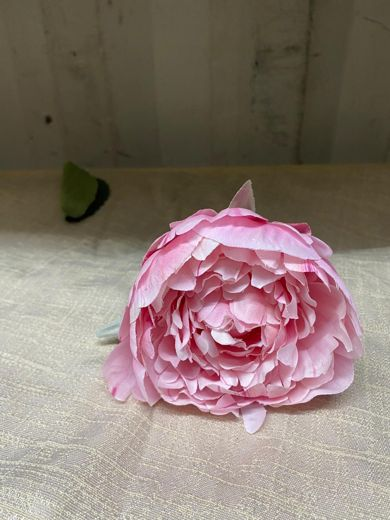
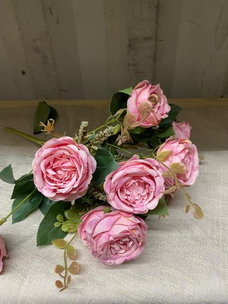
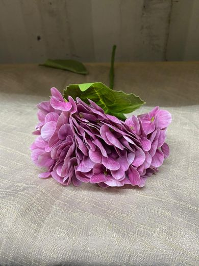
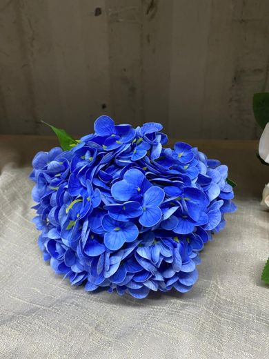
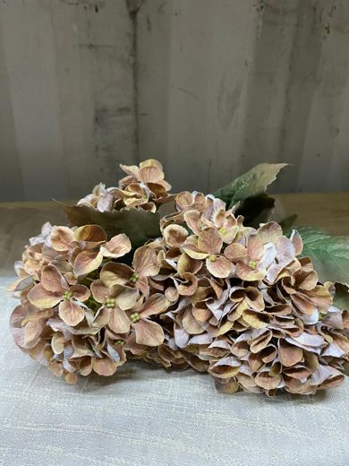
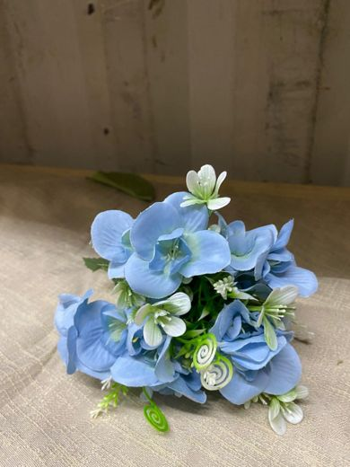
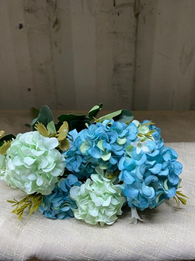
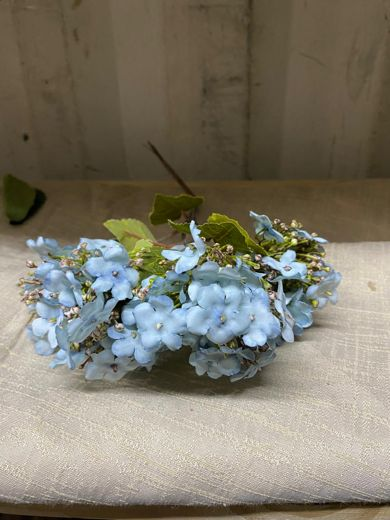
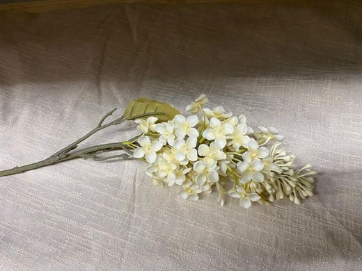
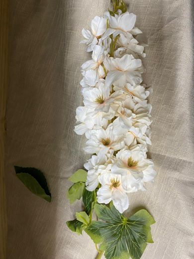
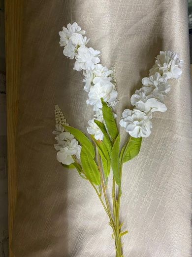
Orquídea Phalaenopsis · cultivo de 2 anos até florir; a orquídea branca é a flor de casamento mais cara do mercado
Orquídea Cymbidium · haste longa, importada; vendida por haste e não por maço
Orquídea Oncidium · a chuva-de-ouro é cara pelo volume de flor miúda por haste
Peônia · a mais cara das flores de casamento: no Brasil só tem de setembro a dezembro, e fora disso é importada
Rosa inglesa · rosa de jardim (tipo David Austin): muitas pétalas, haste curta, preço de 3 a 5 vezes a rosa comum
Hortênsia · cabeça grande e sazonal; uma haste rende o que cinco rosas rendem, e o preço acompanha
Lilás · flor de clima frio, importada e de vida curta no vaso
Delfínio · haste alta de flor cheia, importada; dá altura ao arranjo nobre
Intermediária20 · preço médio, disponível o ano inteiro
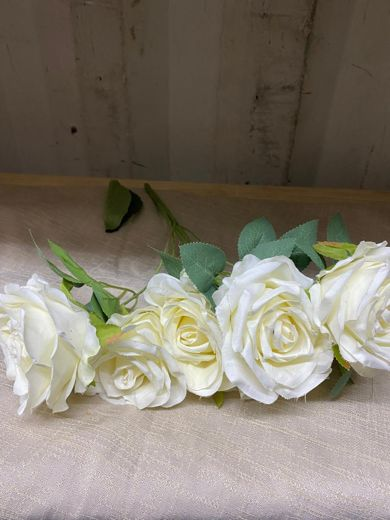
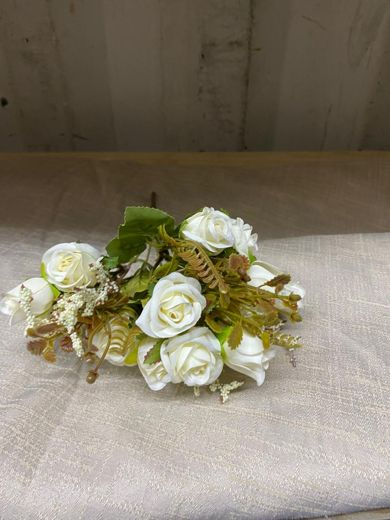
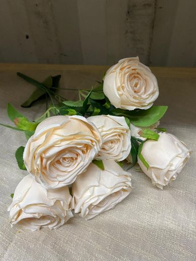
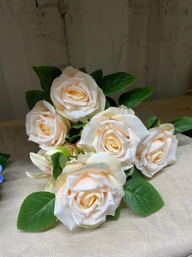
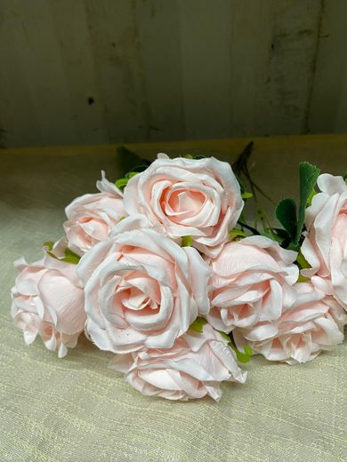
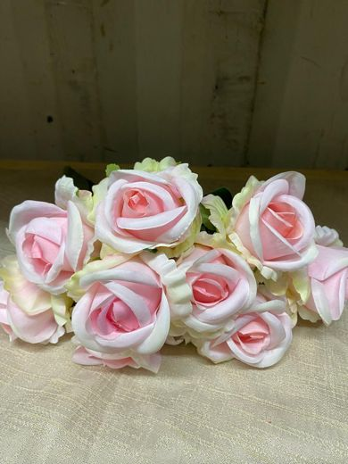
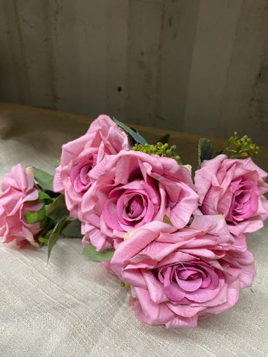
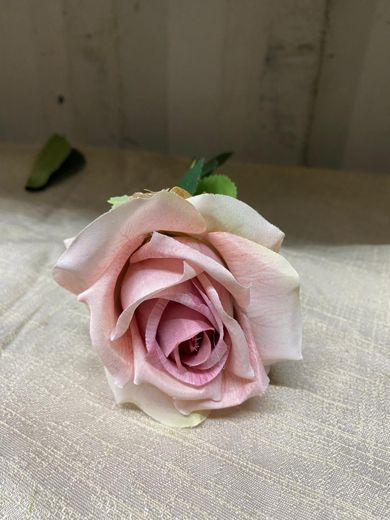
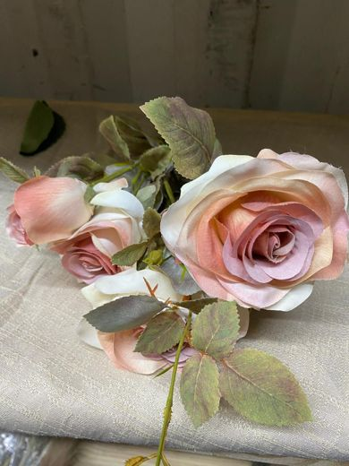
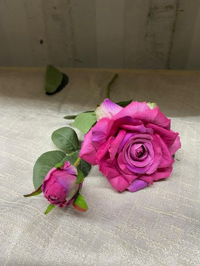
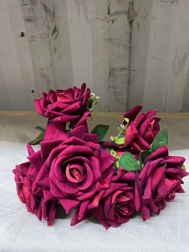
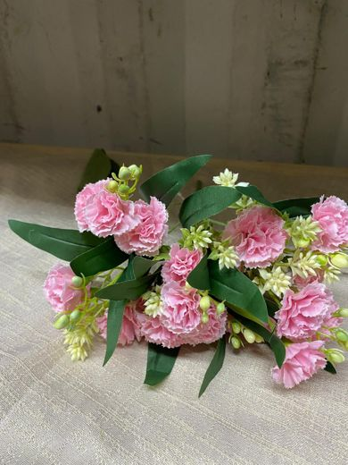
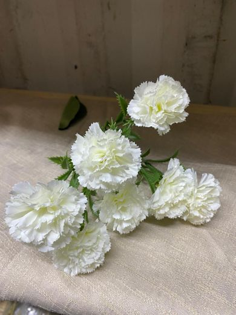
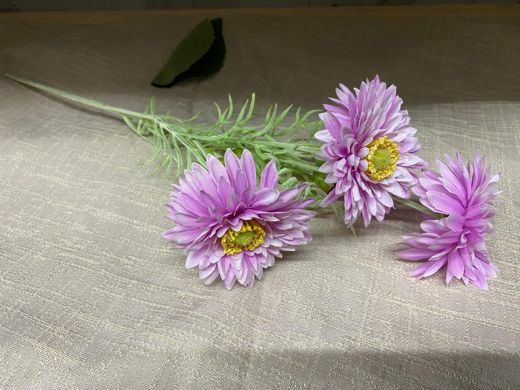
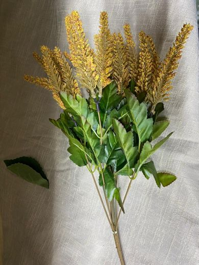
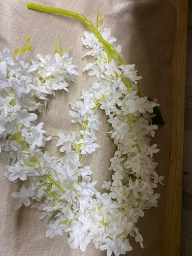
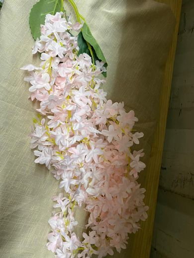
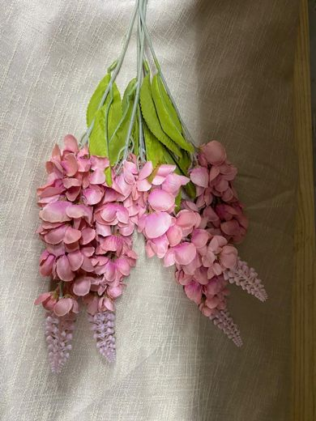
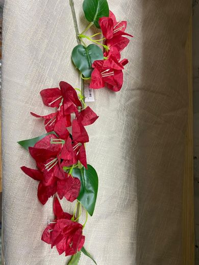
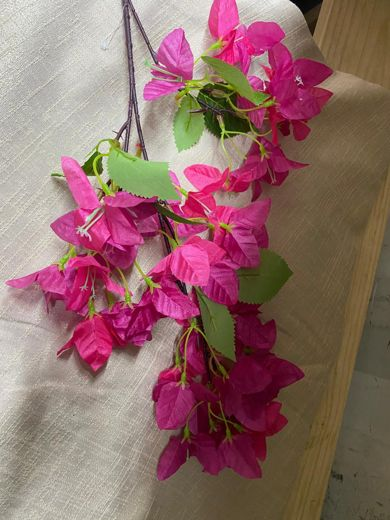
Rosa · a flor de corte mais vendida do mundo: preço médio e disponível o ano inteiro
Cravo · dura muito e custa pouco; voltou à moda em arranjo de volume
Gérbera · flor de corte popular, preço médio e muitas cores
Astilbe · flor de textura, usada para dar movimento; preço médio
Glicínia · pendente: no natural quase não se vende cortada; é a flor do arco em guirlanda
Primavera · buganvília: trepadeira de jardim, boa para contorno de arco
Base6 · barata e de volume; é o que preenche o arranjo
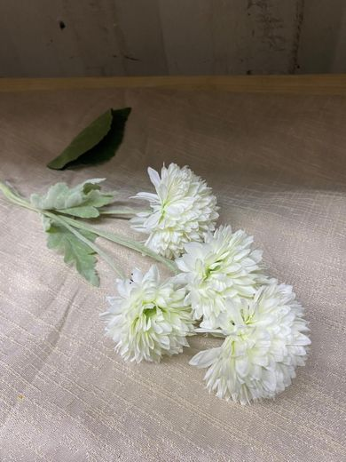
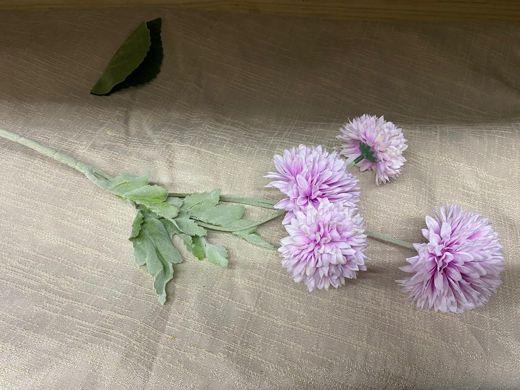
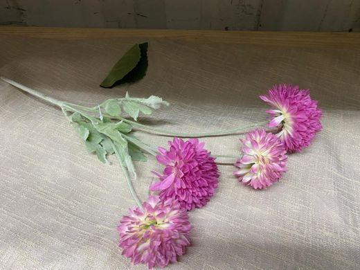
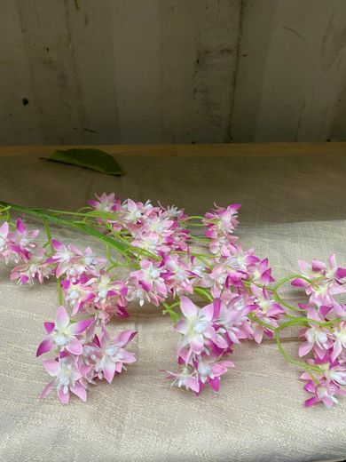
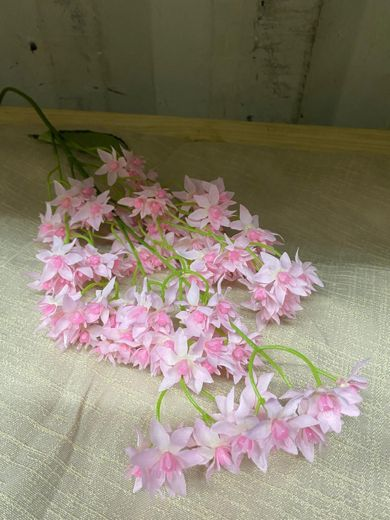
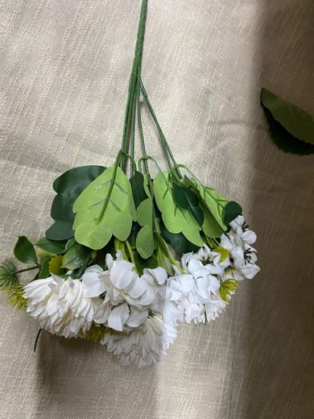
Crisântemo pompom · a flor mais barata do mercado de corte, e a que mais rende volume
Florzinha estrela · flor miúda de preenchimento, o papel que a gipsofila fazia
Buquê misto · maço pronto de crisântemo e flor miúda; rende volume rápido
Folhagem13 · não conta como espécie de flor: é a base de qualquer arranjo, em todos os níveis. Ainda são as fotos do Drive de 22/10
Quem tem acesso a quê
| Nível | Pode escolher | Fica de fora |
|---|---|---|
| 1 · Verde com rosas | folhagem, flores de base e rosa, em uma cor só | o arranjo é mais leve: é essa a limitação do nível 1 |
| 2 · Todas as intermediárias | toda a categoria intermediária — rosa em qualquer cor, cravo, gérbera, astilbe, glicínia e primavera | arranjo cheio; as premium entram como upgrade |
| 3 · As nobres | toda a categoria premium — orquídea (phalaenopsis, oncidium e cymbidium), peônia, rosa inglesa, hortênsia, lilás e delfínio | nada fica de fora |
É isso que vende o nível 3: não é mais arranjo, é carta livre. O cliente senta na reunião e escolhe o que quiser, sem ouvir “essa não entra no seu pacote”.
O arranjo também tem nível
“Dois arranjos na mesa de doces” não diz nada: tem arranjo grande e vazio e tem arranjo grande e cheio. Três palavras resolvem, e o vendedor decora em um minuto.
| No arranjo | Nível 1 | Nível 2 | Nível 3 |
|---|---|---|---|
| Preenchimento | leve | cheio | cheio |
| Flores liberadas | base, folhagem e rosa | + todas as intermediárias | + todas as premium |
| Quanto é flor de foco | 32% do arranjo | 57% | 64%, toda premium |
| Hastes no centro de mesa | 25 | 35 | 33 |
O tamanho do arranjo continua o mesmo em todos os níveis: o que muda é quanto ele preenche e quantas espécies entram. Assim a Decoração monta com a mesma estrutura e o cliente vê a diferença na foto.
Os upgrades
É a porta de subida que hoje não existe: no nível 1 e 2 o cliente paga para alcançar a flor do nível de cima, sem trocar de pacote.
| Em | Upgrade | O que libera |
|---|---|---|
| Nível 1 | Arranjo cheio | sobe o preenchimento do nível 2 sem trocar as flores |
| Nível 1 | Liberar as intermediárias | rosa em qualquer cor, mais cravo, gérbera, astilbe, glicínia e primavera |
| Nível 2 | Liberar as premium | acesso à categoria nobre inteira, como no nível 3, sem mudar o resto do pacote |
| 1 e 2 | Uma premium avulsa | uma espécie nobre só no arranjo principal — a mesa dos noivos ou a de doces |
Falta pôr preço em cada um. Para isso é preciso o custo de compra da flor permanente, que não está em nenhum cadastro.
Como fica o arranjo
Simulação do arranjo da mesa dos convidados, haste a haste, só com flor que existe no acervo. A barra mostra a proporção entre folhagem, textura e flor de foco.
Nível 1Verde com rosas
vaso baixo de 30 cm, 1 a cada 10 convidados · 25 hastes
Oito rosas abertas numa base de verde. Lido de longe é um arranjo de rosas; de perto, o verde é que dá o volume. Nenhuma flor cara dentro.
Nível 2Todas as intermediárias, arranjo cheio
vaso baixo de 30 cm, 1 a cada 10 convidados · 35 hastes
O mesmo vaso, mais cheio. Entram o cravo branco e a glicínia, que dá movimento, ao lado da rosa, que agora vem em três tons (branca, champagne e marfim). Nenhuma premium — a diferença para o 1 é quantidade e variedade, não flor nobre.
Nível 3As nobres
vaso alto ou baixo, à escolha · 33 hastes · 21 premium
Tão cheio quanto o nível 2, só que a flor é outra: 21 hastes nobres, de quatro espécies premium. A folhagem vira moldura.
O que a simulação mostra
A flor de foco sai de 32% do arranjo no nível 1 para 57% no 2 e 64% no 3 — e no 3 ela é toda premium. Do 1 para o 2 o arranjo engorda (25 para 35 hastes); do 2 para o 3 ele não cresce, troca de flor.
Repare que o nível 1 não fica pobre. Ele fica verde, que é um estilo, não uma falta — e é o estilo que mais aparece em casamento hoje. O que o cliente compra no 2 é volume e variedade; no 3, espécie nobre. São duas perguntas diferentes na reunião, e cada uma vende um degrau.
O padrão do mercado. Um centro de mesa de 30 cm leva de 12 a 18 rosas quando é um arranjo de rosas, e de 8 a 12 flores de foco quando é misto. Abaixo de 6, a flor some no verde e o arranjo parece inacabado — por isso o nível 1 entra com 8, não com 3. A unidade de compra também ajuda: flor permanente vem em maço, então 8 e 12 são números que a Decoração já compra.
As quantidades são proposta minha, a partir do padrão de centro de mesa e da regra de composição. Quem monta precisa conferir: pode haver limite de haste por vaso ou de estoque que não aparece na pasta de fotos.
Preço
Mesma régua da mobília: escalonado por estilo, VMC sempre 33% abaixo do valor de venda.
Clássico
Boho
Cristal
De onde vem esse número
O floral fica entre 60% e 71% do valor da mobília do mesmo nível, faixa que a casa já pratica: o Boho floral de hoje é R$ 15.000 para R$ 16.000 de mobília, e o Mini é R$ 8.000 para R$ 7.000.
O nível 1 a R$ 5.000 bate com o que já se vende: o Essencial praticado dá média de R$ 5.591 e o avulso, R$ 4.488.
Dois ajustes que a tabela corrige: o Cristal floral está hoje a R$ 12.000, mais barato que o Boho, sendo o pacote mais caro da casa — e nunca vendeu. E o Essencial está cadastrado a R$ 0, então cada vendedor põe o preço que quiser.
Se vender junto
Hoje existe um “Pacote Cristal (Itens + Floral)” a R$ 32.000 que nunca vendeu — e que embute 24% de desconto sobre a soma. Com a tabela nova, 10% já é um desconto que se defende.
| Estilo · nível | Mobília | Floral | Somado | Junto, −10% |
|---|---|---|---|---|
| Clássico · 1 | R$ 7.000 | R$ 5.000 | R$ 12.000 | R$ 10.800 |
| Clássico · 2 | R$ 14.000 | R$ 9.000 | R$ 23.000 | R$ 20.700 |
| Clássico · 3 | R$ 25.000 | R$ 15.000 | R$ 40.000 | R$ 36.000 |
| Boho · 1 | R$ 7.500 | R$ 5.500 | R$ 13.000 | R$ 11.700 |
| Boho · 2 | R$ 15.000 | R$ 10.000 | R$ 25.000 | R$ 22.500 |
| Boho · 3 | R$ 27.000 | R$ 16.000 | R$ 43.000 | R$ 38.700 |
| Cristal · 2 | R$ 18.000 | R$ 12.000 | R$ 30.000 | R$ 27.000 |
| Cristal · 3 | R$ 30.000 | R$ 18.000 | R$ 48.000 | R$ 43.200 |
O que falta decidir
- O custo de compra de cada flor permanente no acervo. Sem isso a escada de flor é só ordem de mercado, não margem medida.
- A palavra de quem monta sobre o que é flor de entrada e flor nobre na prática, e o que existe em quantidade no estoque.
- A lista fechada do que entra como flor nobre no nível 3 sem custo extra. Sem lista, a promessa vira pedido de orquídea importada fora de época.
- Se o floral entra junto no contrato ou continua como venda separada do Pós.
Leitura do banco de produção em 20/10/2026, só consulta. Composição e preços são proposta, não cadastro. A mobília que serve de base está em mobília do casamento.